CREATIVE MEDIA 2026
INTERNATIONAL SEMINAR
IM A&IC, Panthéon-Sorbonne
Enrique García-Alcalá
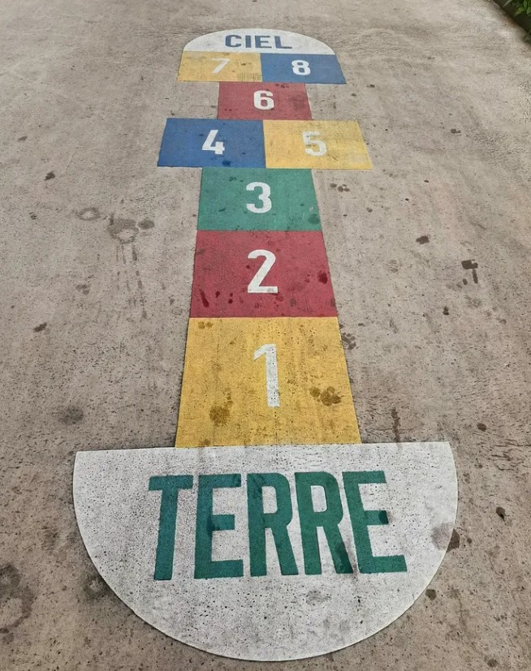

ABOUT ME
Sound as code, 2014–2016
Digital artist and creative technologist
Digital Music Production Engineering, Tecnológico de Monterrey
Master in Interactive Media Arts, NYU Tisch
Code, sound and liminal space
daedograma
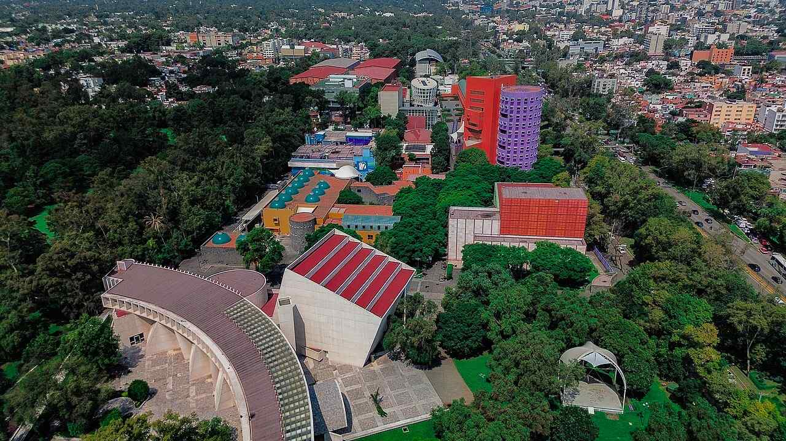
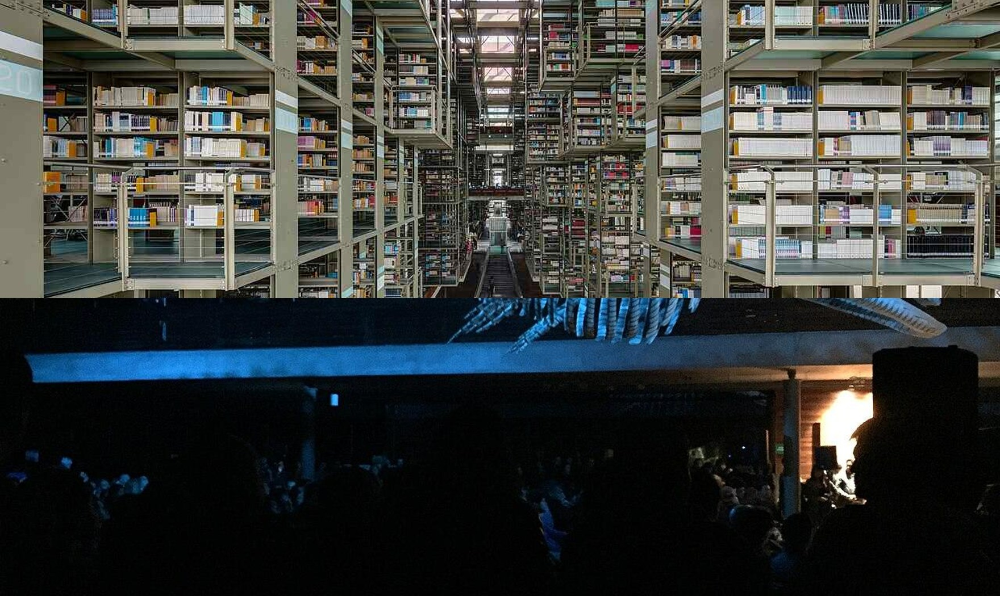
CENART. Biblioteca Vasconcelos, Mátrix Móvil, Gabriel Orozco. Photos: ProtoplasmaKid, J. C. Fonseca Mata, Alequihdez, CC BY-SA 4.0

CENTRO MULTIMEDIA
Researcher, Audio Lab
Centro Nacional de las Artes (CENART), Mexico City
Workshops on code and sound
Cultural events
Subsónica, concert series
Biblioteca Vasconcelos, Mexico City
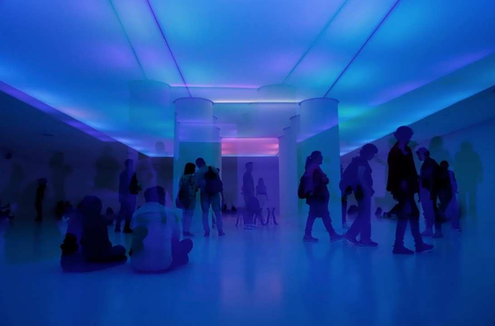
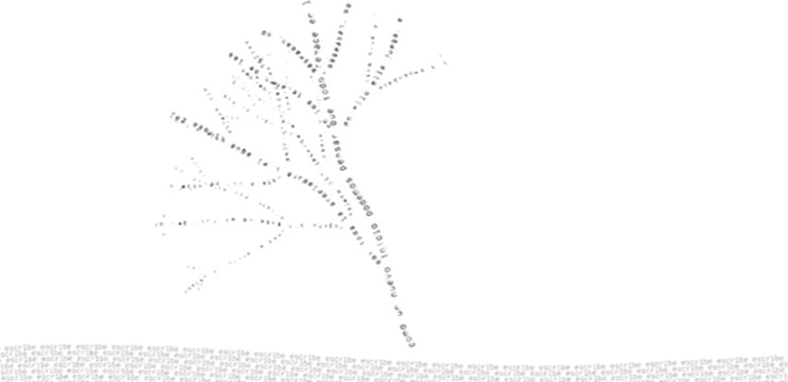
Arborescencia programada, 2018
CENTRO DE CULTURA DIGITAL
2017–2022
Interaction Developer, then Director of Technology
Secretaría de Cultura, Mexico City
Mensajes Sonoros, sound and music cycle
Arborescencia programada, 2018, with Carlos Bergen
A generative poem that grows from what you write
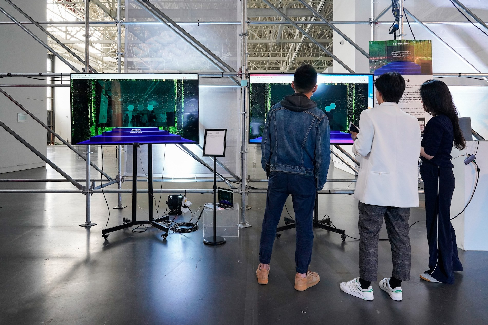

NYU IMA
2020–2022
ITP/IMA Low Res, Tisch School of the Arts, New York University
Thesis: The voice we hear through time, 2021
“A space to become lost and found”
Visitors leave traces for future strangers
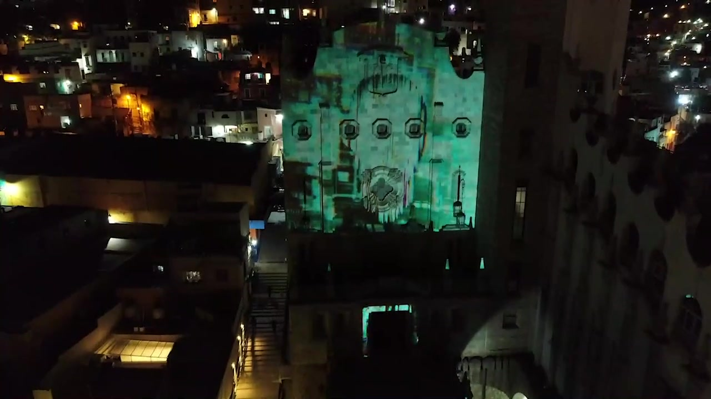
▶Rastros, rostros. Festival Internacional Cervantino, Guanajuato, 2022

LUM ARTE Y MEDIOS
Interactive media studio
Founder
Light installations, projection, pixel mapping
Rastros, rostros, Cervantino, 2022
Solar, Jardín onírico
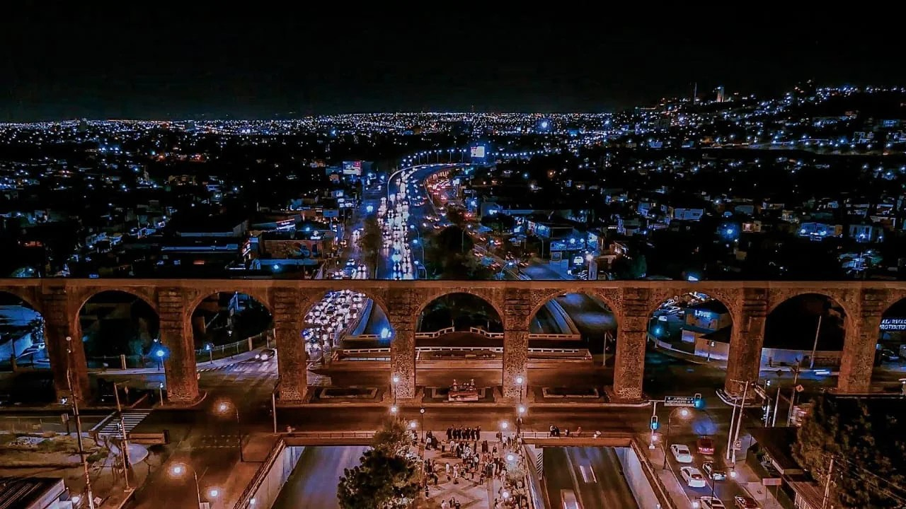
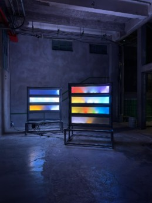
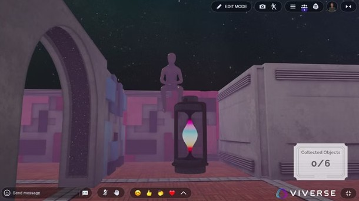
Acueducto, Querétaro. Within, VIVERSE, 2025
NOW
Querétaro, since 2022
Director of the Master in Digital Art and New Media, Tecnológico de Monterrey
I teach interaction/game design and new media art
Within, generative audiovisual maze, HTC Viverse, 2025
Rutinas, MEXTRÓPOLI
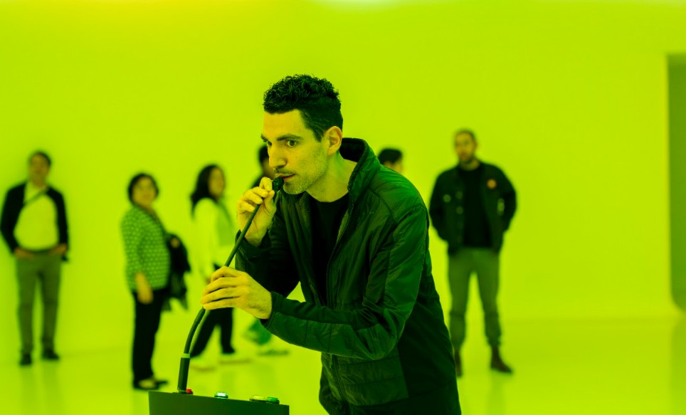
MAM
Master in Digital Art and New Media
Tecnológico de Monterrey
School of Architecture, Art and Design
National online program, based in Querétaro

2026
PHD, PARIS 1 PANTHÉON-SORBONNE
“Does the future still exist?”
A poetics of the possible in the electronic arts
Assesed by Jean-Marie Dallet
INTRODUCTIONS
Your name
What you do
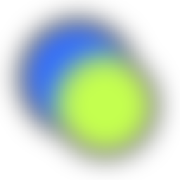
A future you imagined at 12
Schedule
TUE 10:00
Futures we inherited
TUE 14:00
Imagine and build
WED 10:00
Make it look, make it play
WED 14:00
Play and present
Final piece: an interactive story in Twine about a cultural future
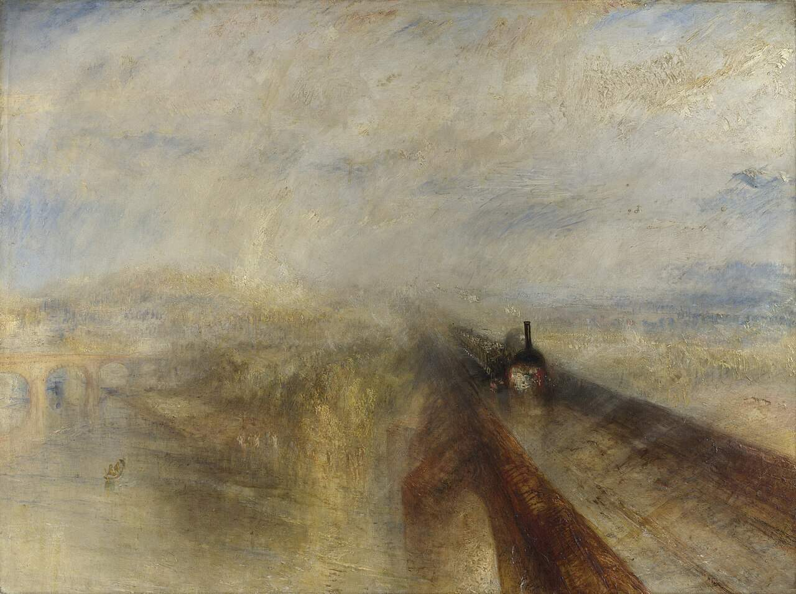
J. M. W. Turner, Rain, Steam and Speed, 1844
FUTURES PAST
The open future is a modern idea
Reinhart Koselleck, Futures Past, 1979
01
Before 1750, tomorrow looks like yesterday. Seasons, kings, religion repeat
02
1750–1850, revolutions, trains and science open the future
03
Progress, revolution, history with a direction
04
Turner paints the train as speed, 1844
MONTFORT
Future is built, not guessed
Nick Montfort, The Future, MIT Press, 2017
Poet, programmer, professor at MIT
01
The future is made with tools, stories and machines
02
World’s fairs, science fiction, design and computing all made futures
03
Douglas Engelbart, 1968. Mouse, hypertext and video calls in one public demo
04
Twenty years later, most people had a personal computer
HYPERSTITION
Stories about the future can produce it
CCRU, Cybernetic Culture Research Unit
University of Warwick, 1995–2003
Sadie Plant, Nick Land, Mark Fisher
Hyper + superstition
01
A fiction becomes real when many people believe it and repeat it
02
William Gibson invents “cyberspace” for Neuromancer, 1984
03
Ten years later the word names the internet
04
Engineers build what they have read
Estridentista woodcut, 1920s
ESTRIDENTISMO
Mexico City, 1921
Actual No. 1, Manuel Maples Arce, a poster on city walls
“Chopin a la silla eléctrica”
Radio, machines, the modern city
Estridentópolis, Xalapa, 1925–1927
Photo: ProtoplasmaKid, CC BY-SA 4.0
TORRES DE SATÉLITE
1957–1958
Mathias Goeritz, Luis Barragán
Gate to Ciudad Satélite, a new city by Mario Pani
Seven towers planned, up to 200 m
Five built after budget cuts, tallest 52 m
Today in the middle of the Periférico freeway
Nortec Collective, Tijuana Sessions Vol. 3, 2005
NORTEC
Nortec Collective, Tijuana
The Tijuana Sessions Vol. 1, 2001
Norteño + techno
Samples of tuba and accordion
Bostich, Fussible and others
Late 2000s, drug-war violence empties Tijuana’s nightlife
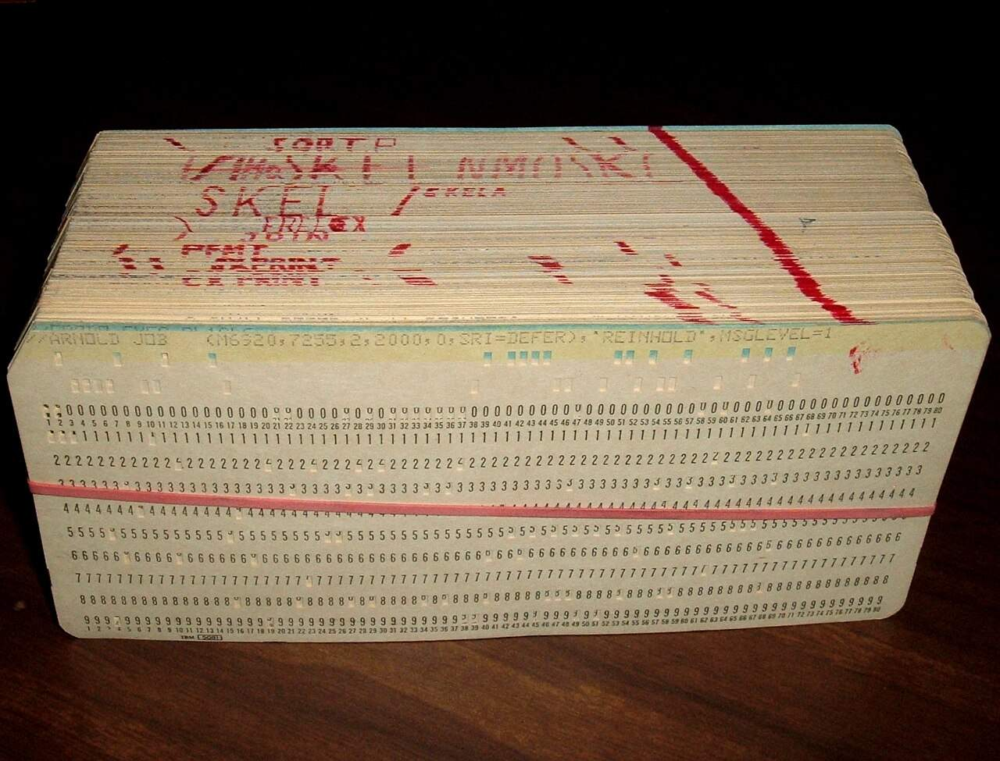
Manuel Felguérez, print. Punched cards, photo: ArnoldReinhold, CC BY-SA 3.0
FELGUÉREZ
Generative art in Mexico, 1970s
Manuel Felguérez, 1928–2020
Painter and sculptor, Generación de la Ruptura
From 1970, IBM computers and punched cards
La máquina estética, 1975
The computer combines a model of his forms into new sketches
Up to 200 drawings a day
In the 1980s he turns the computer off for good
WHO MADE THIS FUTURE?
FOR WHOM?
WHO WAS NOT INVITED?
IN PAIRS
20 MIN
A future you were promised
A film, a technology, a song, a place
Who promised it
What happened to it
How it adapted
SLOW CANCELLATION
Culture stops producing new futures
BIFO
Franco Berardi, Bologna, 1949
Radio Alice, pirate radio, 1976–1977
After the Future, 2011
The 20th century believed in the future, from Futurism to the space race
That belief is over
FISHER
Mark Fisher, 1968–2017
k-punk blog, CCRU
Capitalist Realism, 2009. Ghosts of My Life, 2014
Culture repeats its own past
A 2005 song by Arctic Monkeys could be from 1980
“It is easier to imagine the end of the world than the end of capitalism.”
Fredric Jameson and Slavoj Žižek, quoted by Fisher in Capitalist Realism
ANTIHAUNTOLOGY
New sounds say the future is still possible
Matt Bluemink, Blue Labyrinths, 2021
Stiegler, Simondon, Yuk Hui
The Future is Not Lost, Becoming Press, 2026
01
A reply to Fisher, written when SOPHIE died, January 2021
02
Hauntology lives with the ghosts of the past, a logic of depression
03
SOPHIE, Arca, Iglooghost, hyperpop. Music that sounds like no past
04
A logic of hope, voices from the future guiding the present
FUTURABILITY
Many futures already exist in the present
Franco Berardi, Futurability, Verso, 2017
Six years after After the Future
Close to Deleuze and the virtual
01
The future in singular, the big promise of the 20th century, is over
02
Possibility, what the present contains
03
Potency, the energy to make one real
04
Power, what decides which one wins
TUE 10:00
FUTURES WE INHERITED
TUE 14:00
IMAGINE AND BUILD
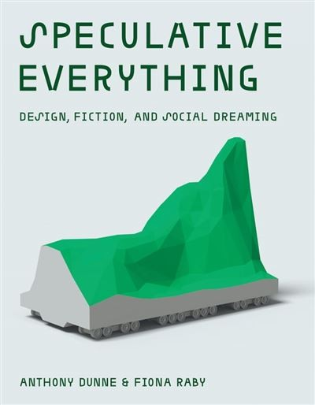
SPECULATIVE EVERYTHING
Design that imagines other worlds to discuss them
Anthony Dunne & Fiona Raby
Speculative Everything, MIT Press, 2013
Design Interactions, Royal College of Art, London
01
Speculative design asks questions with objects
02
Objects from worlds that do not exist yet
03
United Micro Kingdoms, 2013. England split in four regions, each with its own technology and politics
04
What if…?
EXAMPLE
A music festival in 2050
PROBABLE
Every show streamed, tickets priced by algorithm
PLAUSIBLE
Festivals move to winter, summers are too hot
POSSIBLE
Music grown by plants and bacteria
PREFERABLE
Small local festivals, free, run by the neighborhood
EXAMPLE
A museum in 2050
PROBABLE
Tickets by app, long lines, an AI guide in your ear
PLAUSIBLE
Half the collection goes back to its countries of origin
POSSIBLE
A museum with no objects, only the memories of visitors
PREFERABLE
Free museums that lend artworks to your home for a month
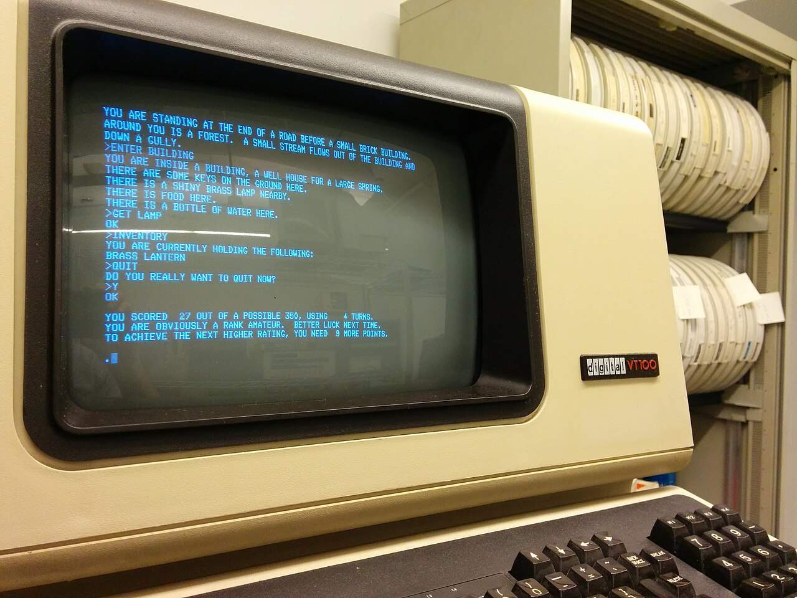
Colossal Cave Adventure on a VT100. Photo: Autopilot, CC BY-SA 3.0
INTERACTIVE FICTION
Stories you play with words
Colossal Cave Adventure, Will Crowther, 1976
You type, the text answers
Zork, MIT, 1977, then Infocom
Choose Your Own Adventure books, 1979
Borges, The Garden of Forking Paths, 1941
Today, Inform, Ink, Twine

Twine 2.9 editor. Screenshot: AlexRosenthal, CC0
TWINE
Chris Klimas, 2009
Free, open source
twinery.org, runs in the browser
Your story as a map of passages and links
Publishes one HTML file
Used by artists, writers, people outside the game industry
PLAY
10 MIN
Queers in Love at the End of the World
Anna Anthropy, 2013
The Uncle Who Works for Nintendo
Michael Lutz, 2014
BASICS
Passage
Link
[[Go outside->Street]]
Image
<img src="URL" width="100%">
Play
Publish to File
EXQUISITE CORPSE
Cadavre exquis, Surrealists, Paris, c. 1925
30 MIN
Groups of 4–5. One laptop per group
Start: “The night music changed…”
Your turn
Read only the last passage
Write 2–3 sentences
End with 2 links
Pass the laptop
A link can open a new passage
[[Run away]]
or go back to an old one
[[Run away->The night music changed]]
Add images
<img src="URL" width="100%">
Don’t look at the screen when it’s not your turn
At the end, play your story from the start
FOR TOMORROW
We will build a cultural practice in 2050
A music scene, a festival, a museum, a party, a ritual, a craft
A Twine where the reader lives it
Three endings, in three parts of the cone
One thing from today survives
Wednesday 16:00, we play them
TEAMS
Teams of 3–4
Your what if
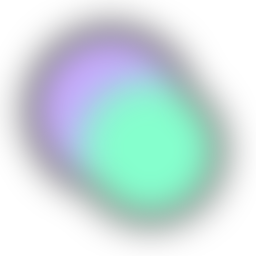
Narrative idea